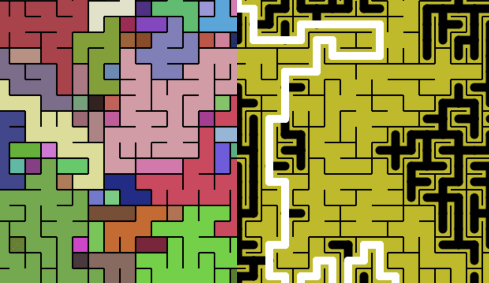
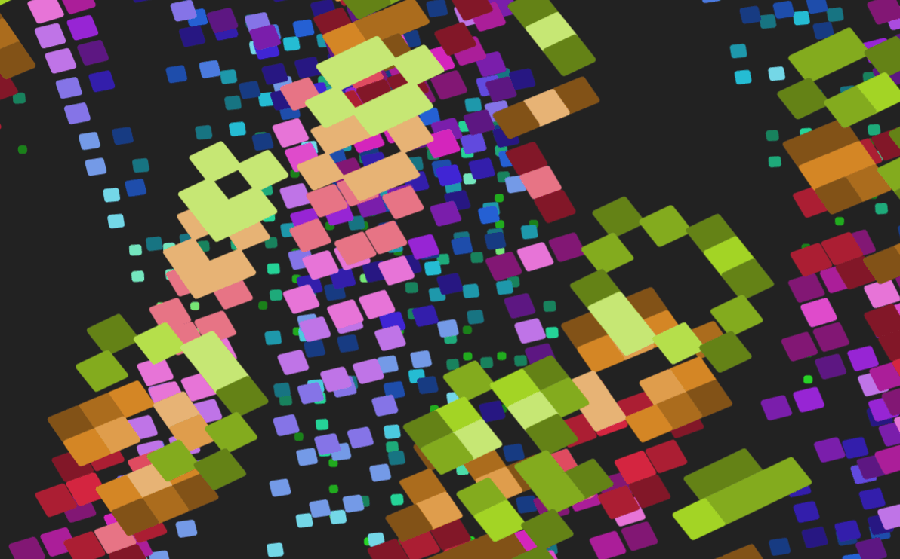
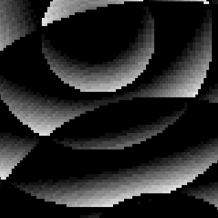
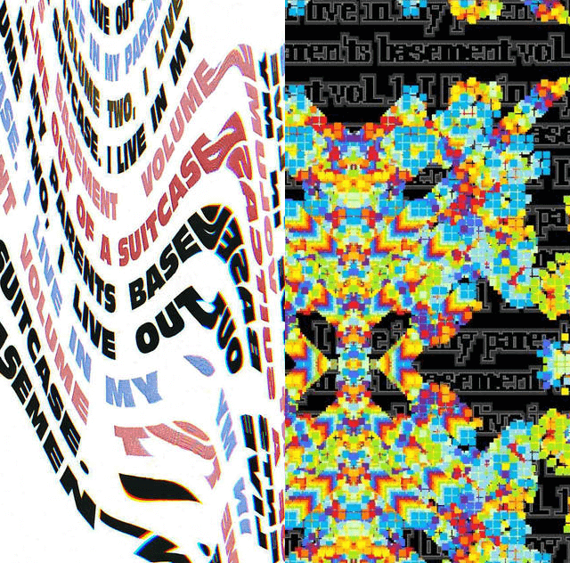

Other experiments and art
Browser demos, drawings, and music from across the years.

Maze Generation
Use Union–Find to join disjoint sets of cells into a connected maze. A visual exploration of connectivity and tree structures.
Launch maze demo
3D Game of Life
A two-dimensional cellular simulation echoed into three dimensions and rendered on canvas with ZDog.
Launch Game of Life demo
StroboSnooper
A browser tool for viewing stroboscopic animations, including animated turntable slipmat discs.
The demo contains flashing imagery.
Open StroboSnooper
Shader Patterns
A collection of black-and-white channels, each built from computations that determine the brightness of every pixel.
Launch shader demo
Webcomics
An archive of comics and drawings from a return to a childhood ambition: becoming a cartoonist.
Browse the comics archive
Game Boy Music Video
Hand-drawn pixel animation for Lowlands, made with MS Paint and Windows Movie Maker, with a reworked 16-bit soundtrack.
Watch on YouTube
Music & recordings
Songs and musical experiments using software synthesizers, found audio, and chance-based composition.
Listen on Bandcamp